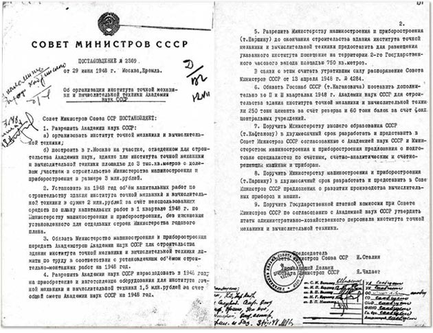

Из биографии Толстого Л.Н. 1828
Толстой один

1828 28 августа[1]. В усадьбе Ясная Поляна Крапивенского уезда Тульской губернии у графов Н.И. и М.Н. Толстых родился сын Лев, четвертый ребенок в семье. На следующий день младенец был окрещен в церкви св. Николая Чудотворца в Кочаках священником Василием Можайским. Восприемниками были: белевский помещик С.И. Языков и графиня П.Н. Толстая. Граф Н.И. Толстой — участник заграничных походов 1813—1814 гг., подполковник в отставке, тульский помещик. Его пращур — П.А. Толстой, сподвижник Петра I, первый граф в роду Толстых (1724). Графиня М.Н. Толстая принадлежала к роду князей Волконских. Получила прекрасное домашнее образование, писала стихи, повести и романы, переводила с французского, немецкого, итальянского языков. Своего деда Н.С. Волконского, генерала от инфантерии, бывшего военного губернатора Архангельска, Толстой называл в воспоминаниях «умным, гордым и даровитым человеком». Н.С. Волконский — владелец и устроитель Ясной Поляны. «Вероятно, у него было очень тонкое эстетическое чувство. Все его постройки не только прочны и удобны, но чрезвычайно изящны», — писал Толстой.
Раздел II
Институт точной механики и вычислительной техники
Раздел III
Изменение убеждений
- изменение религиозной веры (на выбор: буддизм, конфуцианство, индуизм). Специальное предложение - иудаизм и мусульманство вместе;
- изменение веры в непогрешимость любимой партии;
- убеждение в том, что инопланетяне существуют;
- предпочтение политического строя, как самого лучшего в своем роде (на выбор: феодализм, социализм, коммунизм, капитализм).
Работа со временем
- создание пунктуальности (никогда не будете никуда опаздывать);
- излечение от пунктуальности (никогда никуда не будете торопиться);
- изменение восприятия времени и часов.